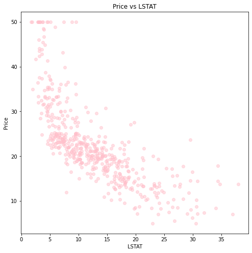

Datawhale - Ensemble Learning
The notes are taken following DATAWHALE-CHINA‘s Ensemble Learning with the main contents in Chinese. The table below shows the contents and the tasks embeded with hyperlinks could be directly jumped into by clicking.
- - - - - - - - - - - - - - - T A S K 0 2 - - - - - - - - - - - - - - -
[ B A C K ]

ASSIGNMENTS: （面试常考题）
1. 请详细阐述线性回归模型的最小二乘法表达。
1 |
2. 在线性回归模型中，极大似然估计与最小二乘估计有什么联系与区别？
在回归算法中,用最小二乘法和最大似然估计求解损失函数时,最大似然法中，通过选择参数，使已知数据在某种意义下最有可能出现，而某种意义通常指似然函数最大，而似然函数又往往指数据的概率分布函数。与最小二乘法不同的是，最大似然法需要已知这个概率分布函数，这在实践中是很困难的。一般假设其满足正态分布函数的特性，在这种情况下，最大似然估计和最小二乘估计相同。
最小二乘法以估计值与观测值的差的平方和作为损失函数，极大似然法则是以最大化目标值的似然概率函数为目标函数，从概率统计的角度处理线性回归并在似然概率函数为高斯函数的假设下同最小二乘建立了的联系。
https://zhuanlan.zhihu.com/p/91255754
3. 为什么多项式回归在实际问题中的表现经常不是很好？
1 | 在training dataset中表现得越好的多项式存在overfitting的问题，阶数越大其variation越大，曲线表现得“起伏”越多，并尽可能逼近了某些点，因此使得在test dataset的时候表现很差。 |
4. 决策树模型与线性模型之间的联系与差别？
回归树与线性模型的比较：
线性模型的模型形式与树模型的模型形式有着本质的区别，具体而言，
线性回归对模型形式做了如下假定：𝑓(𝑥)=𝑤0+∑𝑗=1𝑝𝑤𝑗𝑥(𝑗)，而回归树则是 𝑓(𝑥)=∑𝑚=1𝐽𝑐̂ 𝑚𝐼(𝑥∈𝑅𝑚)。
那问题来了，哪种模型更优呢？
这个要视具体情况而言，如果特征变量与因变量的关系能很好的用线性关系来表达，那么线性回归通常有着不错的预测效果，拟合效果则优于不能揭示线性结构的回归树。
反之，如果特征变量与因变量的关系呈现高度复杂的非线性，那么树方法比传统方法更优。树模型的优缺点：
- 树模型的解释性强，在解释性方面可能比线性回归还要方便。
- 树模型更接近人的决策方式。
- 树模型可以用图来表示，非专业人士也可以轻松解读。
- 树模型可以直接做定性的特征而不需要像线性回归一样哑元化。
- 树模型能很好处理缺失值和异常值，对异常值不敏感，但是这个对线性模型来说却是致命的。
- 树模型的预测准确性一般无法达到其他回归模型的水平，但是改进的方法很多。
5. 什么是KKT条件？
1 |
6. 为什么要引入原问题的对偶问题？
1 |
7. （必做题）用Task01中数学基础所学内容，找到一个具体的数据集，使用线性回归模型拟合模型，要求不能使用sklearn，只用python及numpy。
1 | # import libaries |
1 | # step1: datasets collections |

1 | # step2: model |
1 | # step3: training |